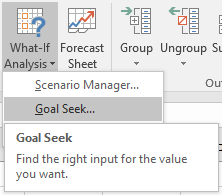

Microsoft Excel 2:
Data Analysis
Introduction
Welcome to Excel 2: Analysis! This course will build upon the basic skills you learned in the Excel 1 class. The focus of this course is on the advanced tools and functions Excel offers for analyzing large quantities of data.
About this Class
Excel 2: Analysis is one of three intermediate Excel classes offered by Software Training for Students. These three classes (Functions, Data Visualization, and Analysis) are designed so you can take them independently and in any order. After this class, you will be able to utilize powerful features of Excel which allow you to analyze data faster and easier.
As of 2016, Microsoft Office has combined its PC and Mac versions to provide the same experience to all users. However, one major difference remains, that it, the use of the Control and Command keys on Windows and Mac respectively for keyboard shortcuts. These keys essentially perform the same function and are used in conjunction with other keys to perform various tasks quicker. Your instructor will mention these interchangeably.
Learning Outcomes
By the end of this workshop, students should have a variety of new skills and competencies in Excel and feel comfortable working with the tools Excel has to offer for data analysis.
After completing this workshop, students should know:
-
When linear vs. nonlinear solution approaches are useful
-
Why checking function solutions for correctness is necessary and how to make this evaluation
-
Why constraints are necessary to optimizing the Solver function
-
About the Data Analysis ToolPak and its various uses
-
When a histogram is appropriate in data analysis
And should be able to:
-
Use data validation in practical situations
-
Use the What-If Analysis, Goal Seek, and Solver functions accurately
-
Use a series in place of Autofill
-
Find and activate add-ons in Excel
-
Use the Descriptive Statistics function
-
Format a histogram effectively
Required Skills
You should have a basic knowledge of the Windows environment, and have taken Excel 1, or have equivalent experience.
Key background skills needed include familiarity with the following:
-
Common terminology: rows, columns and cells
-
Entering and editing data
-
Basic formulas: addition, subtraction, product, division, etc.
-
Built-in functions: sum, average, etc.
Other Requirements
In addition to this manual, you will need to download the class files for the course and have access to a computer with Microsoft Office 2016. The class files can be downloaded at the STS website or will be provided by your instructor.
If you are working on an older version of Office, some features may be located in different locations or, on rare occasions, may be unavailable altogether. In such cases, setting up an Ask-a-Trainer appointment with an STS trainer via the STS website would allow you to work through your specific questions. Otherwise, Microsoft Office is also available on most campus computer labs. Office 2016 can also be acquired free of cost as a student here: it.wisc.edu/services/office-365/
To begin, find the Excel-2-Analysis-2016.xlsx file from the downloaded Class Files and open it. Examine the various exercises in the worksheets.
Data Validation
The data validation tool in Excel is useful for making sure the right type of data is being entered into your spreadsheets. This can help avoid simple human error when entering in lots of data values or to make sure others you may pass a spreadsheet on to are filling the right types of information into cells. In this section, we’ll be analyzing an example in which you’re running a bakery trying to keep track of special orders.
Drop-Down Lists
Navigate to the Data Validation worksheet. In this example, you’ve asked your employees to log all new special orders coming into your bakery on this spreadsheet. Since you only offer three types of cakes and frostings, it’s easiest in this case to provide a drop-down list for employees to choose from when filling out these columns.
-
Select cells B6:B11.
-
Without deselecting those cells, switch to the Data tab in the ribbon and find the Data Validation tool.
-
In the Allow field, select the List option.
-
For Source, select cells I7:I9.
-
Press Ok
Now if you select cells in the Cake Flavor column, you’ll see a drop-down symbol appear at the right, where you’re able to input which cake flavor the customer has requested.
You can also test what happens when you try and type anything else into those columns; you’ll see Excel comes back with an error because you’ve specified only drop-down selections can go in those cells.
Instead of selecting cells for the Source field, you can also enter in your own data values.
-
Select cells C6:C11.
-
Navigate to the Data Validation screen
-
This time, take note of the Clear All button; this will clear any applied data validation rules to all cells you have selected.
-
Under Allow, select the List option again.
-
This time, instead of selecting input cells for the Source, type in the frosting flavors the bakery offers, separated by commas.
-
Hit Ok
You end up with the same resullt as the first time, just by typing in your own options instead of referencing other cells.
Text Length
Aside from drop-down menus, the data validation tool is also able to regulate the length of text a person is allowed to enter into a cell. In this example, we don’t want to accidentally record a phone number wrong and end up with less than 7 digits or more than 9.
-
Select cells D6:D11.
-
In the Allow drop-down in the Data Validation screen, select Text length.
-
For minimum, enter "7" and maximum, "10".
-
This time, switch to the Error Alert tab before accepting.
-
In the Title field, type "Invalid Number".
-
For the Error message, enter in a message telling the user to type a valid phone number between 7 and 10 digits.
There are three types of Error Alerts available to use in the Style drop-down menu:
- Stop will force the user to go back and change the invalid data.
- Warning will warn the user they're entering incorrect information, but will allow them to keep changes to the cell.
- Information is a less powerful warning and will still allow changes to the cell in the event of an error.
-
Press Ok
Now, if we test this new data validation we’ve created, you’ll see entering any number that isn’t between 7 and 10 digits will result in an error with the personalized message we just gave it. The Stop error won’t allow any text not meeting these requirements to be inputted into these cells now.
Time and Date Validation
Finally, we’ll be looking at restricting dates and times using the data validation tool. It’s store policy not to take orders more than 90 days out, and people are only allowed to pick up their orders during regular store hours, so let’s make sure the spreadsheet won’t accept any dates or times outside those restrictions.
-
Select cells E6:E11.
-
In the Data Validation tool, select Time under the Allow tool.
-
For Start time, enter "10:00" and End time, "17:00".
-
This time, switch to the Input Message tab. This will allow us to personalize a message for the user of the spreadsheet to let them know the format they need to follow.
-
Under Title, type "Time of Pickup".
-
For the Input message blank, type "Please enter a time between 10:00 AM and 5:00 PM".
-
Hit Ok
Notice how clicking on a cell under the Time of Pickup column now shows the short message we included to give the user information about the kind of data they should be entering. Once again, feel free to test how this data validation works. For the Time validation, Excel will now only accept times between 10:00 AM and 5:00 PM written in either that format or in military time.
Date validation is a very similar process, but this time we'll be working a function into the Start and End fields.
-
Select cells F6:F11.
-
Navigate to the Data Validation tool once more and select Date from the Allow drop-down menu.
-
Under Start date, write "=TODAY()" and for End date, "=TODAY()+90".
-
Navigate to the Input Message and Error Settings tabs and enter in appropriate messages.
-
Press Ok
Now Excel will only allow dates that are today or later for the pickup. This will ensure on any given day, an employee can only enter in dates within 90 days from the day they’re entering the order in. This is the benefit of writing functions into the arguments of the Data Validation tool, as it gives a higher degree of flexibility when setting conditions for more complex situations.
Input Tables
Creating tables in Excel can make managing and analyzing hypothetical data very easy. In this section, we will use a table with two inputs to analyze how the outcomes of a final exam score and project score will affect our overall semester grade. In other words, we can create a table that contains all possible outcomes for our exam and project grades and have Excel calculate our final semester grade based on that table.
"What-If" Data Table
Navigate to the Two Input worksheet. This section explains how to use “What-If” Data Tables, which is an available tool through “What-If” Analysis.
In this example, it is the end of the semester. For this class, we have already completed six homework assignments and three exams whose grades are already specified in the worksheet. The only items left to be completed and graded are the final exam and a final project. We want to know what our final grade would be depending on what grade we receive on these two remaining assignments.
We still have not completed our project or final exam, but we need some values as starting points to calculate our hypothetical final grade.
-
In cells F5 and G5, enter a value of 80% for the Project grade and 85% for the Final Exam grade.
Now we must write an equation to calculate our final grade as shown below. Here, we sum the products of the different grade components with their respective weights.
-
In cell K8, Insert the formula =0.1*B11+0.4*E8+0.2*F5+0.3*G5.
-
Press Enter
Again, remember that the project and final exam grades are just guesses so that we can write a complete formula for our semester grade calculation. Now that we have done that, we can fill in the "What-if" table.
Filling a Series of Data
This exercise explains how to fill in the data table with possible values for “What-If” analysis. This “What-If” table has an empty row along the top to fill in with hypothetical project grades and an empty column on the left to fill in with hypothetical exam grades. Let’s use a few Auto Fill features to put in the grades.
-
In cell G20, type 0.
-
In cell H20, type 10.
These are both automatically changed into percentages due to the number formatting of the cells.
-
Select cells G20 and H20 and Autofill the selection until cell Q20. This completes the series from 0% to 100% in increments of 10%.
-
In cell F21, type 0.
-
Select cells F21:F41.
-
Navigate to the Home tab and fine the Fill button. From the drop-down menu, select Series....
-
Specify a Step value of 0.05, leaving all the other options as is, and click OK.
Excel automatically completes the columns by incrementing each cell by 5% to the end.
Performing a What-If Analysis
The data table is almost ready perform the “What-If Analysis.” This allows us to iteratively solve a formula based on parameters supplied to it by a table. Our semester grade calculation is a perfect use for it. In order for a ‘What-If’ table to work properly, we must specify a specific equation that we want to alter the values of. For this example, we will use the Semester Grade formula in K8 and use “What-If” Analysis to see how our project and final exam grades will affect our semester grade.
-
In cell F20, type =K8 and press Enter.
-
Select cells F20:Q41 (the entire table).
-
Switch to the Data tab in the ribbon and find What-If Analysis under the Forecast panel.
-
Select Data Table from the What-If Analysis drop-down menu.
In Row input cell, we want to enter the project grade, because this is the first variable we want to vary in our semester grade equation.
-
Click in the Row input cell field and then click cell F5 (project) in the workspace.
In Column input cell, we want to enter the Final Exam grade, because this is the second variable we want to vary in our semester grade equation.
-
Click in the Column input cell field and then click in cell G5 (final exam) in the workspace.
-
Click OK.
The table is now filled out with many possible values for our final semester grade. We can double check our results by finding our original guess values for the project (80%) and final exam (85%) and see if they match our original semester grade (85.95%).
You have now successfully completed a two input table!
Goal Seek
Excel has tools available that can be used to solve both simple and complex mathematical equations. We will look at one of these tools now called Goal Seek. Excel’s Goal Seek feature allows you to alter the input values in a formula in order to find out what the results will be. When Goal Seek is used properly, we can use it to solve algebraic equations.
Switch to the Goal Seek worksheet for this section.
The Goal Seek function has three parameters:
-
Set cell: This is the cell whose value is changed to the goal value defined in the To value form.
-
To value: The goal value is specified here.
-
By changing cell: This cell's value is used as a variable which is changed so as to satisfy the goal value in the Set cell.
Calculation of Semester Grades
For our first example, we will go back to the semester grade problem and calculate the exact score we need on the test to receive an A (90%) for the semester using Goal Seek. Before we begin, navigate to cell G10 to view the formula we will be working with. It should look familiar, as it is similar to the semester grade calculation that we have used for input tables. The following exercise explains how Goal Seek can be used to calculate theoretical results for our data.
-
Click in cell G10, the semester grade. This is the cell we will be changing.
-
From the Data tab in the ribbon, find What-If Analysis under the Forecast panel.

-
Select Goal Seek from the What-If Analysis drop-down menu.
-
In the Set cell form, input cell $G$10.
-
In the To value form, type 0.90.
-
In the By changing cell form, input cell $H$4.
Here we set the semester grade to the desired target of 90% by changing the final exam score.
-
Click OK twice
We now know that we need to score a 91.57% or better on the final exam in cell H4 to receive an A for the semester.
Calculation of Loan Payments
This exercise explains how to use Goal Seek to evaluate a loan payment. Here, we will work with a loan that we have taken out. We have taken out a $100,000 loan at a yearly interest rate of 7% that we intend to pay off in four years (48 months). Right now, our current monthly payment is $2394.62. However, we can only afford to pay $2000 a month on our loan and want to figure out how long it will take us to pay it off.
-
Select cell B21 and click on Goal Seek as done previously.
-
In the Set cell form, input cell $B$21.
-
In the To value form, type 2000.
-
In the By changing cell form, input cell $B$19.
Here, we are changing our monthly payment to the desired payment we want to make by changing the amount of time it will take us to pay off the loan.
-
Click OK twice
We can see that it will take us about 59.3 months to pay off our loan with $2000/month payments. Since we don’t make a payment at 0.3 months, we will round it up to 60 months which comes to 5 years. Not bad!
A Physics Problem
For our last “What-If Analysis” example we will solve a physics problem. We want to figure out how far we can throw a ball before it hits the ground. We’ll say we can throw at about 15 m/sec (roughly 34 mph). Click on cells B30 and B31 to see how we calculated the horizontal and vertical velocity of the ball. Don’t worry about getting too absorbed in the physics, but notice the use of the RADIANS function that converted our measurement of the angle we can throw at from degrees to radians. To solve this problem, we should set our vertical velocity to the negative of its initial value by changing the amount of time the ball has been in the air. When our vertical velocity is at the opposite of this value, we know that the ball has landed.
-
Select cell B31. This corresponds to our vertical velocity.
-
Find Goal Seek once again and click on it.
-
In the Set cell form, input cell $B$31.
-
In the To value form, type -11.49.
-
In the By changing cell form, input cell $B$28.
Here, we are setting the vertical velocity to its final value when the ball hits the ground by changing the time it takes for the ball to hit the ground. We can use this information to see how far we can throw the ball.
-
Click OK twice
We can see now that it will take the ball 2.34 seconds to hit the ground, and we can throw the ball 23 meters (about 74 feet).
Goal Seek Review
Here are few things to remember about Goal Seek before we move on:
-
Since Goal Seek is used to solve equations, always make sure the Set cell has an equation or formula in it, i.e., something that will vary based on other numbers.
-
To value is the value you want, i.e., your goal.
-
By changing cell is a variable that changes in order to enable the previous two arguments.
However, Goal Seek is limited in its equation solving abilities as it can only solve one equation, and you cannot add any constraints or limits on your solution. Our next topic, the Solver, will allow you to solve multiple equations with multiple constraints.
Solver
This section explains how to use Solver to solve multiple equations at the same time. Goal Seek is an excellent resource for single variable solutions and simple formulas. But when multiple variables are introduced, Goal Seek is not as an effective of a tool as another built-in program called Solver. Solver is part of an Add-In to Excel, meaning that we need to check and make sure we have that Add-In installed.
Before we learn about Add-ins in the following section, switch to the Solver worksheet in your Excel workbook.
Add-Ins
Add-Ins are small programs that add additional functionality to Excel. These may be created by Microsoft or a third-party in order to provide tools that more proficient users of Excel may require. We first need to check and make sure the add-in is active on your computer.
Add-Ins are small programs that add additional functionality to Excel. These may be created by Microsoft or a third-party in order to provide tools that more proficient users of Excel may require. We first need to check and make sure the add-in is active on your computer.
-
Switch to the File tab and click Options.
-
Navigate to the Add-ins options
-
Find the Manage drop-down menu, select Excel Add-ins and click Go....
-
From the list of available add-ins, check the Analysis ToolPak and Solver Add-In, and click OK.
These Add-ins can now be found in the Data tab under the Analyze section. The process of loading the Add-ins into Excel may be slow so please be patient. If you are prompted to install the Add-ins, go ahead and click Yes to install them.
One-Variable Math Example
In Example 1, we will solve the equation "y=x-5" for x. This is very similar to how we used Goal Seek to solve equations, except for this example we will use the Solver tool.
Like Goal Seek, Solver needs both a guess value and a formula to evaluate.
-
In cell B5, type a guess value for x, such as 3.
-
In cell B6, type the formula =B5-5.
We will now use Solver to find the value of x that yields zero as the y value.
-
Navigate to the Data tab.
-
In the Analyze section, select Solver.
-
Click Reset All to remove any previous input.
-
Input the following into the forms:
-
Set Objective: $B$6
-
To: Value Of: 0
-
By Changing Variable Cells: $B$5
-
Solving Method: Simplex LP

By setting the value of B6 equal to zero and changing cell B5 (or x guess) we will gain our solution for x when y = 0.
-
Click Solve
-
Another dialogue box prompts to keep or discard the solution. Click OK too keep the solution if it seems logical.
We have now solved y = x – 5 for y = 0 using both Goal Seek and Solver. For this simple example, Goal Seek is a more efficient option but both get the same solution. Let’s look at a multi-variable set of equations in order to see the real power of Solver.
Multi-Variable Example
Example 2 shows two equations, whose lines intersect at a given point. We are going to use the values of x and y to find the point where these lines intersect.
Let’s talk through this problem before we solve it. We will enter guess values, as before, for both x and y. In cells B17 and B18 we will enter in Equations 1 and 2, respectively. Before we solve, we need to set an objective function to relate the two equations with each other. In this case, we can just add the two equations together, and will set it as our objective for it to equal zero. We will then be ready to solve. Our solutions should be x =0.857 and y =5.143 as can be estimated from the graph.
Before we use the Solver, we need to input the pre-requisite data into the worksheet that includes the guess values, the two equations, and the objective function that correlates the equations.
-
In cell B14, input a guess value of 1.
-
In cell B15, input a guess value of 5.
-
In cell B17, input the equation =2.5*B14-B15+3 and press Enter.
-
In cell B18, input the equation =-B14-B15+6 and press Enter.

-
In cell B20, input the objective function =B17+B18.
Now that we have all the information entered into the worksheet, we can use the Solver to solve for x and y.
-
Click on Solver in the Data tab as before.
-
Click Reset All to start over.
-
Input the following into the forms:
-
Set Objective: $B$20
-
To: Value Of: 0
-
By Changing Variable Cells: $B$14:$B$15
-
Solving Method: Simplex LP
-
Click Solve.
-
A dialogue box will prompt you to either keep or discard the solution. Click OK to keep it.
Solver found a solution for our objective function equal to zero (and may have found one different than above), but it is still not quite what we want. Notice that our equations in cells B17 and B18 are not equal to zero. We can make one simple addition in our Solver window to correct this problem.
-
Select Solver
-
In the Subject to the Constraints field, click Add.
We must set one of these equations equal to zero.
-
Input the following in the Add Constraint box:
-
Cell Reference: $B$17 or $B$18
-
Operator: =
-
Constraint: 0
-
Click OK.
-
Click Solve and then OK once again.
We can now see that by adding one constraint, Solver found a solution all of our requirements:
Equation 1 = Equation 2 = Equation 1 + Equation 2 = 0
As seen in this example, you could say that Solver is not always accurate in solving sets of equations. In reality, Solver is correct but you did not completely constrain the problem in the way you meant. Make sure to always double check your work after a solution is reached (hence the graph).
Practical Nonlinear Example
In this last example, we will look at a practical application for Solver. In this case, we own a small business with 4 employees providing a computer repair service and charge our customers $30 per job. Each employee is paid a wage shown below:
The Jobs column indicates how many jobs each employee completed during the month. The Earnings column is the total earning of each worker, simply the Wage column multiplied by the Jobs column.
Firstly, set up the formulas and functions to complete the Total Jobs, Total Wages, Revenue, and Profit cells.
-
In cell C31, type the function =SUM(C26:C29) and press Enter.
-
In cell C33, type the function =SUM(D26:D29) and press Enter.
-
In cell C35, type the formula =C31*H27 and press Enter.
Calculate the profit by subtracting the wages from the revenue.
-
In cell C37, type the formula =C35–C33 and press Enter.
We now have a multitude of variables to change to try to optimize our business. We are going to determine the optimal price to charge our customers by setting the following constraints:
-
Each employee completes at least 5 jobs per month
-
Minimum Total Profit of $700
-
No more than 30 total jobs every month
-
Select Solver in the Analyze panel of the Data tab.
-
Click Reset All.
-
Input the following into the forms:
-
Set Objective: $C$37
-
To: Value Of: 700
-
By Changing Variable Cells: $C$26:$C$29,$H$27
-
Solving Method: GRG Nonlinear
-
Contraints:
-
$C$26:$C$29 = integer
-
$C$26:$C$29 >= 5
-
$C$31 <= 30
-
Click Solve followed by OK.
We added a few contraints to make sure our solution is valid and not nonsensical. The first contraint specifies that the number of jobs has to be an integer, that is, we want the job number rounded off to the next whole number as one cannot perform 3.45 jobs, for example.

All of our conditions have been met and we can see that we need to charge our customer $38.98 per job. Note that often times multiple solutions are possible and that you may get different answers while running the same problem. You can always add additional constraints until you get an answer that best fits your needs.
Analysis ToolPak
In addition to Solver, we've added the Analysis ToolPak add-on. This add-on allows for financial, scientific and statistical data analysis. Switch to the worksheet named Aerobic Activity for this section.
This file is an example of a hypothetical study of the connection between an individual’s BMI (body mass index) and hours of aerobic activity per week. The given information in the table includes the individual’s gender, weight before exercise and their current hours spent doing aerobic activity per week. We'll be using this data to demonstrate the use of a couple of Analysis ToolPak tools.
Descriptive Statistics
The first analysis we will perform on our data is calculating some general statistical information using Descriptive Statistics from the Analysis ToolPak. We can get information such as the mean, median, mode, etc. very quickly with this tool.
-
Switch to the Statistics worksheet.
-
Select Data Analysis from the Analyze panel on the Data tab.
-
Select Descriptive Statistics and click OK.
-
In the Input Range form, enter $E$2:$G$32
-
Leave the Columns radio button check for the Grouped By option.
-
Enter "Descriptive-Stats" in the New Worksheet Ply form
-
Select the Summary statistics checkbox and click OK.
A table with the relevant statistical information will be displayed in the Descriptive-Stats worksheet. Below is the table we should see, but formatted for ease of reading. We may format our table similarly.
Histograms
Another valuable tool when looking at statistics is the histogram. Histograms are useful when looking for a visual representation of frequency of data, in other word, in other words, the number of occurences of a specific value. Switch to the Aerobic Activity worksheet for this exercise.
First we need to create a range for the data to be plotted on the histogram. We will call this the "Bin."
-
In cell J12, type Bin. This will be the label of our "bin" column.
-
In cell J13, enter 15.
-
In cell J14, enter 20.
-
Use Autofill to fill up a column of values from 15 to 50 in increments of 5.
Excel will now group data, for example, everything greater than 40 and less than or equal to 45 will be accounted for in the 45 bar of the histogram. Let us go ahead and create the histogram now.
-
Select Data Analysis from the Analyze panel on the Data tab.
-
Select Histogram and click OK.
-
In the Input Range form, enter G2:G32.
-
In the Bin Range form, enter J12:J18.
-
Check the Labels checkbox
-
Type "Histogram" in the New Worksheet Ply form under Output options to create the histogram in a new worksheet with that name.
-
Check Chart Output to display a chart of the data and click OK.
The grouped data with along its corresponding frequencies and the histogram chart will be displayed in the Histogram worksheet.
The Office support webpage, linked here has information on all the available Analysis ToolPak tools for your reference.
Analyze Your Budget
Now, using what you’ve learned in this course, we have an extra project for you to complete to get extra experience with data analysis in Excel using a real-life example. This section includes a walkthrough tutorial for creating your own budget spreadsheet based on your expenses and using the tools featured in this manual to analyze your spending.
Monthly Expense Table
First, we’re going to make a worksheet with a template to track expenses over one month as they come in. You can start off just making one, but if you wanted to analyze multiple months, you could copy and paste the template you create to keep track of several months in the same sheet.
-
Open up a new workbook in Excel.
-
Right click on the worksheet tab on the bottom of the screen and select Rename to name it "Monthly Spending" or something similar.
-
Now, make a table with four columns:
-
Date
-
Type of expense
-
Amount
-
Expense description
Make the columns as long as you feel necessary. You want the table to be large enough to track every expense you have in an average month.
-
Now apply a drop-down list rule to the "Type of expense" column you've just made using data validation.
-
Select all the cells in the “Type of expense” column.
-
Click on the Data Validation tool.
-
In the Allow drop-down, select List.
-
For Source, enter in categories you'd like to divide your expenses into, making sure to separate each with a comma, as shown in the sample picture.
-
Hit Ok
You should now be able to select the expense type as you're entering them from a drop-down list.
-
In the row under your table, include a place to sum your total expenses for the month under the “Amount” column.
-
Now, with your completed table, fill in your real expenses from any given month, or fill in hypothetical data.
-
Select all the cells in your "Amount" column.
-
Right click somewhere within the selected range and choose Format cells...
-
From Category, choose Currency.
-
Hit Ok
When you enter values into the Amount column, they should automatically be formatted as currency without you having to type in a dollar sign yourself, as a way to make things quicker.
-
Finally, in the Total cell you created, use the SUM=() function to sum the month’s expenses. Note, your cell values will not be the same as the picture’s.
You should now have a finished expense sheet for one month! An example is depicted here, but yours will probably look much different. The important takeaway is the use of data validation and having some data to work with for the next part of the activity.
Spending Overview
Now that you have a template for tracking your expenses in a month, let’s go ahead and practice using tools on some bigger-picture spending. In this part of the exercise we’ll be using the data from part one plus some more spending data to visualize a year’s worth of expenses.
-
On the bottom of the screen, click the + button to add a new worksheet to the workbook.
-
Name this worksheet "Spending Overview" or something similar.
-
Create 12 columns, with the heading of each being a month Jan-Dec.
-
Insert your total from the previous worksheet under the correct month and fill out the rest of the months with spending values (again, these can be exact, estimates, or made up numbers).
-
Create a histogram to analyze average monthly spending.
-
Make a Bin column somewhere on the spreadsheet.
-
For the bins, choose numbers that make sense with your data. Choosing bins is essential to your histogram output. Your lowest bin should be a number smaller than the lowest monthly spending and you may want to increase in increments of $100 until you have a bin exceeding your most expensive month. An example is shown here.
-
Go to the Data tab, Data Analysis, and select Histogram.
-
In Input Range, select the 12 cells with your total monthly expenses.
-
In the Bin Range, highlight all the cells you just wrote for your bin.
-
Select Output Range and choose a cell somewhere on the spreadsheet you'd like the histogram to show up in.
-
Finally, make sure to check Chart Output.
-
Click Ok
Now you should have a histogram that looks something like the example that gives you an idea of what your spending in a year looks like.
Savings Goals
In this final section of the activity, we’ll use a What-If table, Goal Seek, and Solver to take a look at savings goals based on the spending data we’ve just created.
-
Under the row with the money you spent in each month of the year, create a new row for the money earned each month and populate this row with income values for each month.
-
Add a third row for the money saved each month.
-
In the first column of this row, calculate your savings for January by entering "=[EARNED CELL] - [SPENT CELL]".
-
Click on this cell with your calculated January savings, click the green square in the bottom right corner, and use Autofill to determine your savings for the rest of the months of the year.
-
Somewhere on the spreadsheet, create an empty table for a What-If analysis on the amount of money you save a month vs. how many months you save for. Think back to the manual example to get a feel for the formatting required here.
-
Create an "Amount Saved" column with a series of amounts of money you could realistically save per month.
-
Now create a row with 12 cells numbered 1-12 for analyzing savings between one month and one year.
-
On the top left of the table, leave a spot for a guess number.
Now you should have a complete table to run a What-If Analysis on. Again, take the time to format this table in a way that looks nice. Note your “Amount Saved” values don’t necessarily have to be the same as the example picture’s.

-
Populate the table with a two-input What-If Analysis.
-
Create a “Monthly Savings” cell and fill it with a guess value that’s featured in your table.
-
Create a "Months" guess value as well.
-
Similarly, create a "Total Savings" cell by typing in a formula "=[MONTHLY SAVINGS CELL] * [MONTHS CELL]".
-
In the top left corner of your empty What-If table where you left a place for a guess, enter in "=[TOTAL SAVINGS CELL]".
-
Select your entire table.
-
Go to the Data tab in the Excel ribbon, What-If Analysis panel, and select Data Table.
-
For Row input cell, select your Monthly Savings cell.
-
In Column input cell, select your Months cell.
-
Hit Ok
You should have a completed What-If Analysis on how much money you could save over time based on what you save monthly vs. the amount of months you save for.
-
Let’s say you want to save $200 for a concert coming up in a year. Use Goal Seek to figure out how much money you’ll need to save for specifically this purpose if you want to have enough by the end of the year.
-
Go to the Data tab, What-If Analysis panel, and select Goal Seek.
-
For Set cell, select your Total Savings cell from before.
-
In the To field, enter "200".
-
Finally, in the By changing cell field, select your Monthly Savings cell from earlier.
Your Monthly Savings cell should now have changed to the value you would need to set aside for the concert each month to be saved up in 12 months’ time.
-
Now double check the result you just got with Goal Seek by using Solver for the same purpose.
-
Reset the Goal Seek you just did by returning the Monthly Savings cell to its original guess value.
-
Select Solver from the Data tab.
-
Set Objective to the Total Savings cell.
-
Enter a To value of "200".
-
In the By Changing Variable Cells field, select the Monthly Savings cell.
-
Select a Simplex LP solving method.

-
Hit Solve
You should find that Solver returned the same result as Goal Seek gave you.
Now that you’ve had more experience with these common Excel data analysis tools, can you think of other practical uses you could have for these tools?